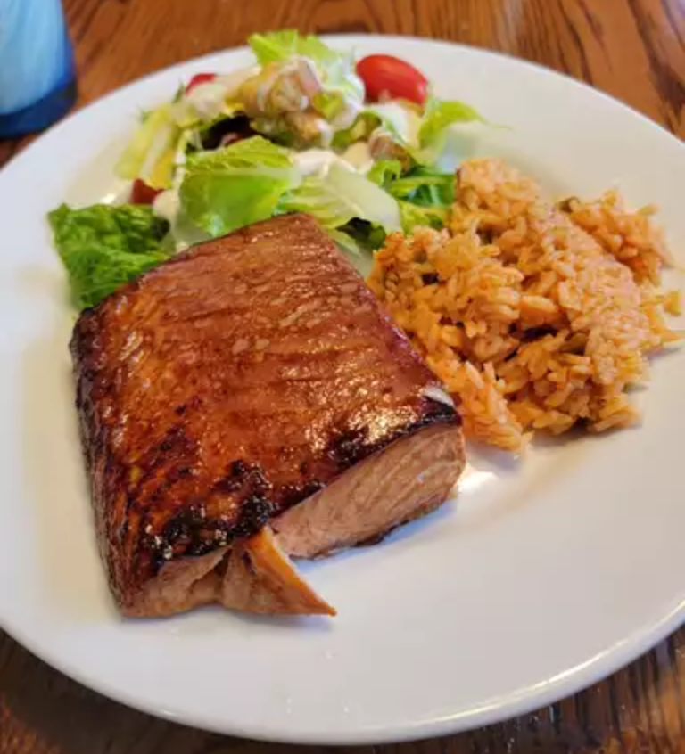

This cedar-plank salmon is a dish my brother prepared for me in Seattle. It is by far the best salmon I've ever eaten. I like to serve it with an Asian-inspired rice and roasted asparagus.
| Prep Time: | Cook Time: | Total Time: | Servings: |
|---|---|---|---|
| 15 mins | 20 mins | 35 mins | 6 |
Soak cedar planks for at least 1 hour in warm water. Soak longer if you have time.
Stir together soy sauce, vegetable oil, rice vinegar, sesame oil, green onions, ginger, and garlic in a shallow dish.
Place salmon fillets in soy mixture and turn to coat. Cover and marinate for at least 15 minutes, or up to 1 hour refrigerated.
Preheat an outdoor grill for medium heat. Place planks on the grill grate. Heat planks until they start to smoke and crackle just a little.
Remove salmon from marinade and place on planks; discard marinade.
Close grill cover. Grill salmon until it flakes easily with a fork, about 20 minutes; salmon will continue to cook after you remove it from the grill.